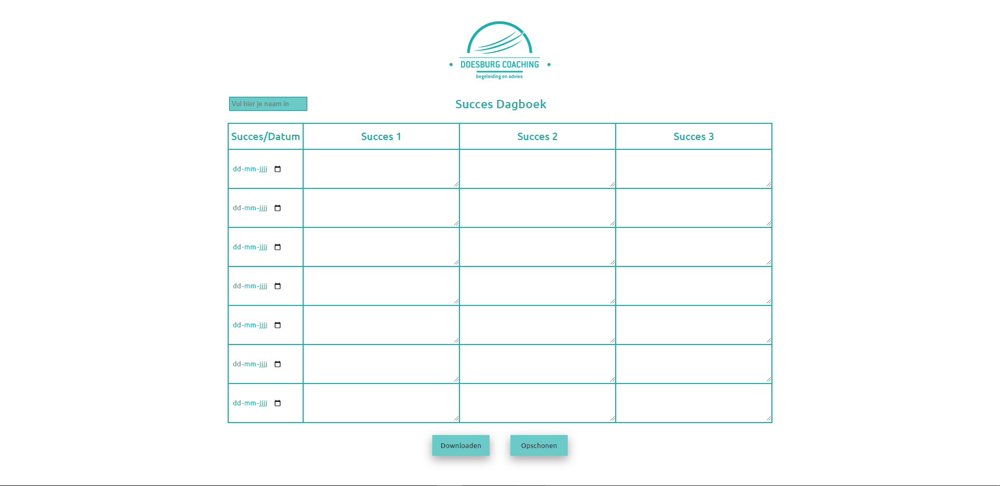

Success Diary
The success diary was made for a company called Doesburg Coaching. This company takes care of customers who have problems with, for example, stress or other mental problems. The Success Diary helps the company to help people by keeping track of success moments in a digital and friendly way.
View Project

Cookie Dough Clicker
The Cookie Dough Clicker was made for a School Assignment. The intention was to create an HTML page that gives points to the user by clicking. It must be possible to purchase upgrades with a maximum of 1x per upgrade.
View Project

Kanao's Flip A Coin
Kanao's Flip A Coin is a website I created on my own. It is based on a scene from the anime Demon Slayer. It is a simple site where you can flip a coin. The coin has a 50/50 chance of landing on one of the two sides, Tanjiro or Akaza.
View Project

Color Picker
Color Picker is a site based on the well-known Colorhunt site. It is a site that generates random colors so that you can choose a nice color for whatever you need it for. This site is completely OOP which means that no HTML tags are used.
View Project